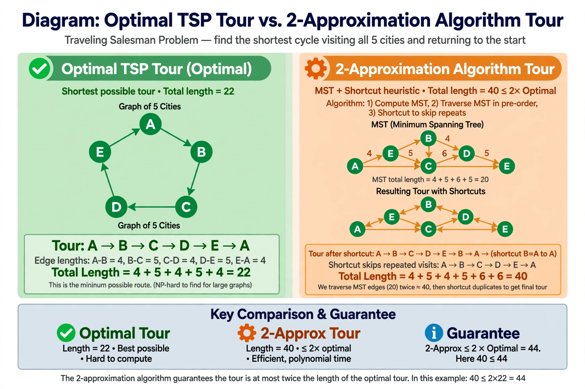

Approximation algorithm

In computer science and operations research, approximation algorithms are efficient algorithms that find approximate solutions to optimisation problems, with provable guarantees on the distance of the returned solution from the optimal one. They are the standard response to NP-hard problems — those shown intractable through the theory of NP-completeness developed by Stephen Cook, Leonid Levin, and Richard Karp — when exact polynomial-time solutions are believed not to exist.
| Purpose | Near-optimal solutions to hard optimisation problems in polynomial time |
|---|---|
| Quality measure | Approximation ratio relative to the optimum |
| Strongest schemes | PTAS and FPTAS |
Approximation ratio
An algorithm is an α-approximation algorithm for a minimisation problem if it always returns a solution costing at most α times the optimum. Classic examples include a simple greedy 2-approximation for vertex cover, Christofides' 1.5-approximation for the metric travelling salesman problem (a record that stood from 1976 until a tiny improvement in 2020), and greedy set-cover algorithms whose ratio is logarithmic in the size of the universe — a ratio known to be essentially best possible.
Approximation schemes
A polynomial-time approximation scheme (PTAS) gives, for every fixed ε > 0, a (1 + ε)-approximation in polynomial time; a fully polynomial-time approximation scheme (FPTAS) is also polynomial in 1/ε. The knapsack problem admits an FPTAS, while problems such as MAX-3SAT (see the Boolean satisfiability problem) are APX-hard: they have constant-factor approximations but no PTAS unless P = NP. Results such as the PCP theorem established tight limits on how well many problems can be approximated at all.
Techniques
Standard design techniques include greedy algorithms, local search, dynamic programming with rounding of inputs, the primal–dual method, and rounding of linear-programming relaxations — including semidefinite programming relaxations, famously used in the Goemans–Williamson 0.878-approximation for MAX-CUT.